| Thumbnail | Download | File format | File size | Pixel type | Dimensions | Contributed by | ||||
|---|---|---|---|---|---|---|---|---|---|---|
| 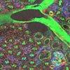 | Mouse kidney section from Invitrogen's FluoCell prepared slide #3. The section is stained with Alexafluor 488 WGA, Alexafluor 568 phalloidin and DAPI, and is imaged as two series: an XYZ stack (25 planes), and an XZY version (46 planes) of the same zone. | |||||||||
| mouse-kidney.zip | Leica LIF | 84,788,147 bytes | uint16 | 512 x 512 71 focal planes 4 channels |
PFID - Imagopôle, Institut Pasteur | |||||
| 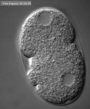 | 4D dataset of C. elegans embryo development up to 8-cell stage | |||||||||
| EmbryoCE.zip | TIFF | 294,270,460 bytes | ? | 425 x 434 12 focal planes |
Kevin O'Connell, NIDDK, National Institutes of Health | |||||
| 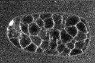 | dub.zip | Bio-Rad PIC | 756,808,942 bytes | uint8 | 768 x 512 85 time points 33 focal planes |
William Mohler, Health Center, University of Connecticut-Farmington | ||||
| 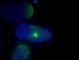 | embryo2.zip | Openlab LIFF | 59,092,227 bytes | ? | 672 x 512 33 time points 3 channels |
NIDDK, National Institutes of Health | ||||
| 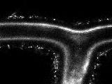 | 2chZT.zip | Zeiss LSM | 54,055,250 bytes | uint8 | 400 x 300 19 time points 21 focal planes 2 channels |
Zeiss | ||||
| 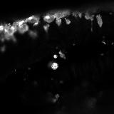 | 10-31_E1.zip | Olympus Fluoview TIFF | 50,556,723 bytes | uint16 | 512 x 512 16 time points 21 focal planes |
Timothy Gomez, Anatomy, UW-Madison | ||||
| 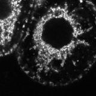 | TAABA.zip | Bio-Rad PIC | 42,939,725 bytes | uint8 | 512 x 512 45 time points 5 focal planes |
- | ||||
| 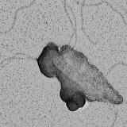 | dnasample1.zip | Gatan DM3 | 25,689,710 bytes | uint16 | 4096 x 4096 | Materials Science & Engineering, UW-Madison College of Engineering | ||||
| 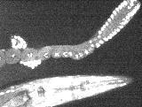 | KEVIN2-3.zip | PerkinElmer | 23,911,099 bytes | ? | 672 x 512 2 time points 29 focal planes 3 channels |
Kevin O'Connell, NIDDK, National Institutes of Health | ||||
| 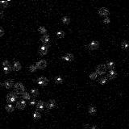 | NESb.zip | TIFF | 22,463,680 bytes | uint8 | 1024 x 1024 10 time points 9 focal planes |
- | ||||
| 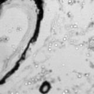 | MF-2CH-Z-T.zip | ABD TIFF | 16,163,765 bytes | uint16 | 256 x 256 5 time points 4 focal planes 2 channels 5 fields |
Andor Technology | ||||
| 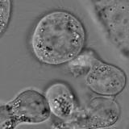 | mitosis-test.zip | Image-Pro workspace | 12,642,856 bytes | uint8 | 256 x 256 7 time points 24 focal planes 2 channels |
- | ||||
| 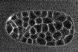 | sdub.zip | Bio-Rad PIC | 5,742,740 bytes | uint8 | 192 x 128 12 time points 9 focal planes |
William Mohler, University of Connecticut - Farmington | ||||
| 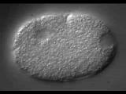 | wtembryo.zip | QuickTime | 5,523,978 bytes | uint8 | 320 x 240 108 time points 3 channels |
- | ||||
| 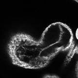 | HEART.zip | Image-Pro | 3,296,110 bytes | uint8 | 512 x 512 30 focal planes |
- | ||||
| 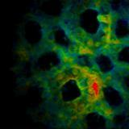 | kidney_TFl.zip | Windows Bitmap | 2,083,265 bytes | uint8 | 384 x 384 9 focal planes 3 channels |
Dennis Fan, Department of Mechanical and Materials Engineering, Florida International University | ||||
| 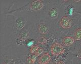 | Blend Final | IPLab | 691,397 bytes | uint8 | 650 x 515 3 channels |
Scanalytics | ||||
| 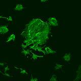 | Leica stack | Leica | 83,581 bytes | uint8 | 256 x 256 3 focal planes |
Wisconsin National Primate Research Center, UW-Madison | ||||
| 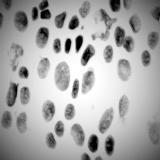 | qdna1.zip | Image Cytometry Standard | 42,831 bytes | uint8 | 256 x 256 | Nico Stuurman, Vale Laboratory, University of California-San Diego | ||||
 |
ndpi.zip | Hamamatsu-NDPI | 3,544,235 bytes | uint8 | 3968 x 4864 3 channels |
Manuel Stritt | ||||
Test images (used for validation)
| Thumbnail | Download | File Size | File format | Contributed by | ||||||
|---|---|---|---|---|---|---|---|---|---|---|
| 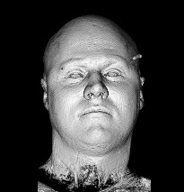 | An AVI version of the T1 Head Renderings sample dataset from the ImageJ sample images. The dataset is a stack of 36 surface renderings of the "T1 Head" volume. It was created using the "Render Cine-mode" option in VolumeJ, using the default settings. The "T1 Head" is a T1 weighted MRI head dataset courtesy of Jeff Orchard. Voxels outside the head have been set to zero to improve file compression. This was done by subtracting 32 from each of the 129 slices. | |||||||||
| test-avi.zip | AVI | 752,503 bytes | Jeff Orchard and Wayne Rasband | |||||||
| 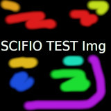 | test-eps.zip | EPS | 101,557 bytes | Gabriel Einsdorf | ||||||
| test-gif.zip | GIF | 311,118 bytes | Gabriel Einsdorf | |||||||
| 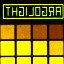 | test-ics.zip | Image Cytometry Standard (ICS) | 334,825 bytes | Jan Eglinger | ||||||
| test-jpeg2000.zip | JPEG 2000 | 200,179 bytes | Gabriel Einsdorf | |||||||
| test-jpg.zip | JPEG | 102,382 bytes | Gabriel Einsdorf | |||||||
| test-pict.zip | QuickTime PICT | 100,055 bytes | Gabriel Einsdorf | |||||||
| test-png.zip | Portable Network Graphics (PNG) | 1,023,286 bytes | Gabriel Einsdorf | |||||||